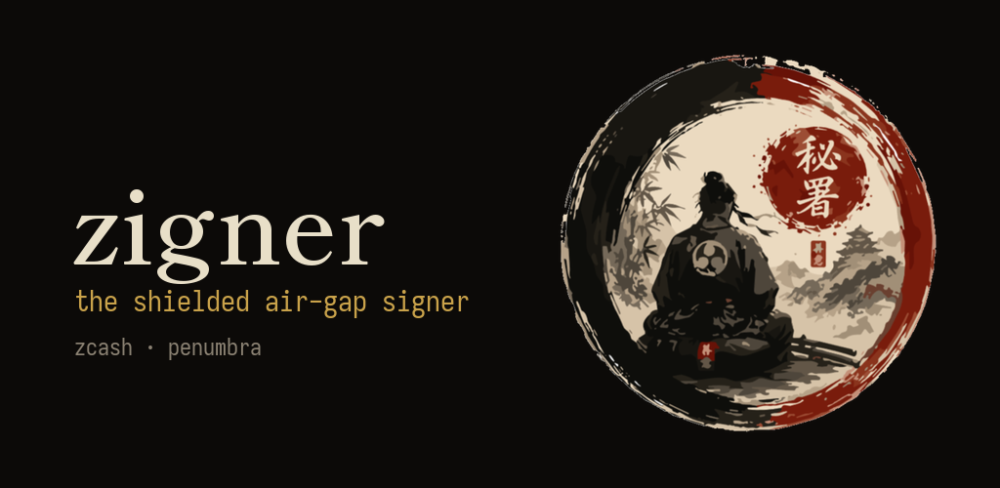

The shielded air-gap signer for Zcash and Penumbra.

Zigner turns a spare Android phone into an air-gapped cold wallet and hardware signer. Transactions arrive as QR codes, are displayed for review, and leave as QR codes - the private keys never touch a network.
Zcash (Orchard and transparent): RedPallas signatures over shielded actions, secp256k1 ECDSA for t-address inputs, with Ironwood (NU6.3 / V6) and NU7 support.
Penumbra: all transaction actions - shielded spends and outputs, DEX swaps, liquidity positions, delegations, votes, Dutch auctions, ICS20 withdrawals.
Private keys are generated on-device and never leave the signing device. Every transaction is displayed for review before it is signed, and the chain ID is validated on every signing request. The device is meant to stay permanently offline - airplane mode with the wireless radios disabled. On compatible hardware (Pixel 8 and later, Samsung with Knox) seeds are encrypted into the secure element rather than held in main memory.
FROST distributed key generation and threshold multisig, with age-encrypted share backup to one or more public keys. Full Viewing Key export for Penumbra (bech32m, UR). QR transaction protocol with fountain-coded animated QR for large payloads. StrongBox support on high-security Android devices. Anchor attestation, which prevents fabricated note trees on Zcash.
Zigner is not a hot wallet or a payment app, and it is not suited to frequent small transactions. It is a signer - it holds keys and approves transactions, and something else broadcasts them.
Tap the button above, or add manually in F-Droid > Settings > Repositories > +
https://foss.rotko.net/fdroid/repo
Fingerprint (SHA-256):
d80e4b0a4f13b483474717373c3b00859c15d370f9f39a513afc4b80299a800c
APKs here are the same signed artifacts published on the GitHub releases page, and carry the same signing key - no reinstall needed when switching between them.